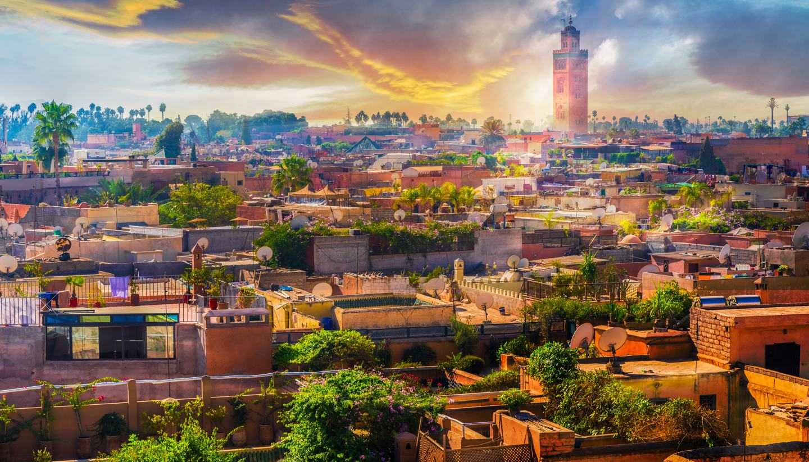

×

Morocco
Климат
На средиземноморском побережье страны климат мягкий, субтропический, средняя температура летом около +24-28ºС (иногда достигает +30-35ºС), а зимой +10-12ºС. Далее на юг климат становится всё более континентальным, с жарким (до +37ºС) летом и прохладной (до + 5ºС) зимой. И зимой и летом суточный перепад температур может достигать 20ºС.
На северо-западную часть страны большое влияние оказывают воздушные массы с Атлантического океана - климат здесь более прохладный, а суточные перепады температур значительно ниже, чем на остальной территории страны. В горных районах Атласа климат сильно зависит от высоты места. Осадков выпадает от 500-1000 мм в год на севере до менее 200 мм в год на юге. Дожди идут, в основном, в зимние месяцы. Западные склоны Атласа время от времени получают до 2000 мм осадков, нередки даже наводнения местного масштаба, в то время как на юго-востоке страны бывают годы, когда осадки не выпадают вовсе.
____